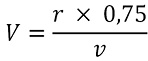

Podzimní prověrka bojové a politické připravenosti
Před následky služby v base zachránil však rotného pitomý nápad generálního štábu vojsk: z hlavního stanu oznámili, že na podzimní prověrku bojové a politické přípravy Osmé tankové divize přijedou prověřující důstojníci o čtrnáct dní dřív, než bylo původně stanoveno. Tím ovšem generálové rušivě zasáhli do průběhu filmování, které zatím u divize probíhalo dosti poklidně, a způsobili mimo jiné, že Malinkatý ďábel na noční událost v posádkovém vězení v rozčilení zapomněl.
Velitel divize plukovník Helebrant probíral právě na školení důstojnictva otázky vlastenectví a zrady, jak je v uplynulém roce osvětlil případ bandy Slánského. Meditoval o tom s chutí; jedenáct šibenic dodalo problému výrazné názornosti, drahé srdcím vojenských pedagogů, a krom toho se den předtím v kladném smyslu vyslovila dívenka, kterou plukovník dobýval už bezmála rok. Pocházela z dobré komunistické rodiny, spřízněné s ministrem národní obrany, takže plukovník hovořil vlahým hlasem:
„Rozum zůstává stát, soudruzi, nemluvě o politické uvědomělosti. Slánský –“ zde se kontemplativně odmlčel, „– měl nejméně třicet tisíc měsíčně, a zradil. Já – a vy, soudruzi, jak tu sedíte – nemáme nikdo ani polovinu, a co uděláme?“
„Nezradíme!“ vydechl snaživý poručík Hezký a právě v té chvíli vtrhl do místnosti plukovníkův pobočník major Kališ, jehož depeše z generálního štábu zastihla, právě když s velitelem místního oddílu PTP sjednával bezplatný odvoz dřeva ze stavby gorodkového stadionu na staveniště své víkendové chaty. Plukovník přelétl očima depeši, zbledl, a když ze všeho nejdříve s odvahou hodnou příslušníka tankových vojsk telefonicky odložil včera sjednanou svatbu, rozběhl se na politické oddělení divize, kde major Sádlo pomalu otáčel klikou hektografu a vyráběl přísně tajné, důvěrné a dosti nečitelné (později nikým nečtené) Instrukce POD k politickému zajištění přípravy PPbPP a kde kapitán Vavruška sestavoval měsíční zprávu o činnosti klubu a kulturně masových světnic Osmé tankové divize, na základě přesných hlášení, jichž se mu dostalo od náčelníků klubů jednotlivých pluků, kteří tato hlášení sestavili z materiálů dodaných jim náčelníky klubů jednotlivých praporů, jež byly zkompilovány ze zpráv politruků jednotlivých setnin, kteří si tyto zprávy svědomitě vymyslili a upravili je tak, aby souhlasily se závazným programem kulturně masové práce, který si před měsícem vymyslili major Sádlo s kapitánem Vavruškou a rozeslali jej na všechny útvary divize.
Plukovník těžce usedl na židli, bez prodlení seznámil oba důstojníky s Jobovou zvěstí a ta v mžiku znehodnotila cyklostylované plody krásně promyšleného systému. Blány byly vyrvány ze stroje a nahrazeny čistými, hektograf se roztočil nebývalou rychlostí a informace, přestylizovaná do série výhrůžných rozkazů, se brzo nato rozlétla po celé divizi. Všude vyprovokovala psací stroje útvarových písařů k podobně nezvyklé výkonnosti.
Jako blesk z nebe zasáhla i kapitána Matku, velitele Sedmého tankového praporu. Sledoval právě se zalíbením práci četaře Filipa, jenž mu za mříží tajné spisovny ze součástek různých tankových radiostanic tajně sestavoval přepychový superhet1, a zlá novina mu zkazila radost z dobrého díla. Rozlítostněn pocitem křivdy vydal službám úsečný rozkaz sehnat do pěti minut všechny příslušníky štábu vem kde vem, a když se podřízení, tušící nepříjemnosti, shromáždili, důkladně je seřval.
Největší dávku vzteku si jako obvykle odnesl nepořádný poručík Melichar, náčelník intendančního skladu. Maje za to, že prověrka je dosud v bezpečné vzdálenosti, dopustil se toho zločinu, že opomenul obstarat nové žluté opasky, které měly být mužstvu přiděleny v den zkoušky (a večer po jejím skončení opět odebrány). Stál proto, krok před řadou ostatních, v pozoru před běsnícím kapitánem a čekal nejhorší. Při každém „Zvednu vám mandle!“ nebo „Proženu vám šunky!“ neklidně polkl, nablble se usmál a zamrkal vodovýma očima. Vyčkával jenom, až se sopka utiší a on bude moci odejít do své kanceláře a tam celý výstup, v poněkud ochotničtějším provedení, zopakovat s četařem z povolání Líbezným. Náhle ho však jako rána pěstí udeřil ostrý povel „Čelem vzad!“, v jehož nebezpečné břitkosti detonovaly zatím netušené zdroje zuřivého vzteku. Učinil, jak mu bylo poveleno, a vyvalil oči na řadu štábních důstojníků, kteří stáli v lati nyní jakoby před ním, vyděšeni neobvyklou variantou jinak velmi obvyklého procesu.
„Takhle se plní rozkazy svých velitelů?“ hulákal zezadu Matka. „To chcete, aby pak vojáci plnili rozkazy jejich velitelů? Co? Odpovězte!“
„Provedu,“ řekl poručík Melichar a marně se snažil uhodnout, čím, kromě neopatření opasků, se ještě vzpříčil rozkazům.
„Ste němej?“ zařval kapitán.
„Ne,“ pravil pohotově poručík.
„Nebo ste hluchej?“
„Ne.“
„Tak ste slyšel rozkaz?“
„Ano.“
„Proveďte!“
„Provedu!“ ujistil kapitána Melichar a po krátké úvaze pravil: „Soudruhu kapitáne, dovolte mi dotaz!“
„No co?“
„Prosím o vyjasnění rozkazu,“ řekl odvážně poručík.
„Jaký vyjasnění?“
„Není mi vědomo,“ pravil poručík, jenž se pod dojmem instrukcí z intendančního učiliště snažil ve služebním styku mluvit spisovně, „v čem mnou byla neplněna kázeň.“
„Není vám vědomo, co?“ zařval kapitán. „Čelem vzad!“
Melichar se pečlivě otočil a octl se opět tváří v tvář kapitánovi. Matka rozepjal náprsní kapsu, vytáhl ohmatané kapesní zrcátko a přidržel je poručíkovi před obličejem.
„A co je tohle?“ zahulákal.
Poručík neodpověděl. Spatřil svoje vodové oči, svůj uctivý výraz, svoje ještě docela nesmělé, ráno oholené, nyní jen nepatrně rašící vousy, spatřil ne zrovna nejšpinavější límec khaki košile a ještě poněkud čistší vázanku a nechápal.
„Tak co je to?“ dorážel Matka.
Pauza. Po ní mladý důstojník nejistě hlesl:
„Poručík Melichar Oldřich.“
„A co to vrabčí hnízdo?“ zahřměl kapitán. „Ty drátenický vlasy! Kdy ste byl naposled u holiče, soudruhu poručíku? Eště si vemte na záda pastičky a můžete chodit po domech! Takhle se připravuje lidově demokratický důstojník na prověrku bojový a politický připravenosti? Takhle? Styďte se!“
A zatímco poručík rudl (vztekem, ne studem), kapitán provedl energické čelem vzad a s dobrým pocitem, že rázným vystoupením vytvořil předpoklady a vlastně už přímo zajistil úspěšné zdolání nadcházejících zkoušek, odebral se k poradě na divizi.
Náčelník jeho štábu nadporučík Pinkas si mezitím dal nastoupit velitele čtyř rot a jejich zástupce pro věci politické; ve stručném, poněkud znaveném expozé je seznámil s úkoly, které jako obvykle přesahovaly jejich možnosti, a pak je bez jakékoliv naděje propustil. Sám, s tváří, jež se víc než jindy podobala masce, uchýlil se do tajné spisovny, vyhodil odtamtud četaře Filipa i s nedodělaným superhetem a vrhl se do výroby nezbytných plánkonspektů, které měl sice z větší části vyrobit kapitán Matka, které však z větší části kapitán Matka vyrobit neuměl, a jež by proto, nadán mocí rozkazu, dříve nebo později stejně nařídil vyrobit nadporučíkovi Pinkasovi. Moc rozkazu měl sice náčelník štábu také, ale nikdo z jeho podřízených, až na některé poddůstojníky, nebyl nadán schopností rozkaz takového druhu splnit. Nadporučík, zajatec neřešitelné situace života, se tedy rezignovaně zamkl ve spisovně a odtud po příštích čtrnáct dní prakticky nevyšel, a dokonce tam i spal. Občas, dřív než upadl v neklidnou, dvou- až tříhodinovou dřímotu, přemýšlel zde mezi písemnostmi o své ženě Janince a logický mozek starého frontového bojovníka mu říkal, že je naprosto nepravděpodobné, aby mu uprostřed tolika mladých mužů zůstávala věrná. Na chvíli jím zalomcovala žárlivost, ale byl příliš unaven, příliš zvyklý plnit povinnosti, a jejich hierarchie byla vojenská. Klesal znova do neklidného spánku a myšlenky na kulatá ňadra a slastné lůno, ozdobené rozkošnými kudrnami, vytlačila představa nevyřešeného obchvatu tankového praporu za nepřímé podpory dělostřelectva. Nadporučík, ztracený právě tak jako jeho manželka, jenom jinak, ve vojenském výcvikovém prostoru Kobylec, vstával z improvizovaného polního lůžka, vařil si černou kávu a usedal k mapám.
A rotný se k ránu plížil prázdnou kaštanovou alejí, šelestivým deštěm rychle zrzavějících listů, a spěšně procházel kolem diskrétní služby, aby do budíčku ještě honem urval hodinu spánku.
Snaživý poručík Hezký, velitel První tankové roty, přiklusal křepce do své kanceláře a s chutí se tam pokusil rozvířit čilou činnost. Narazil na prozíravou absenci dubnového ročníku, a když učinil pokus sehnat dostatečný počet mužstva, jež by se pustilo do čištění rotních rajónů, zastihl z celého stavu pouze několik příslušníků prvního ročníku. Na kulturní světnici dopadl však rotného Smiřického, zaměstnaného na jakémsi spise, jejž před poručíkem schoval pod čerstvý výtisk Obrany lidu. Za jiných okolností byl by poručík chtěl vědět, co před ním rotný ukrývá, dnes však byl příliš zaujat velkými úkoly. Vydal jen příslušné rozkazy a v příští čtvrthodině ubíral se již rotný v čele potupného útvaru lemounků přes tábor k dřevěným barákům učeben Sedmého tankového praporu nahoře u lesa. Tam měli z lavic a z latrín „odstranit vzhledem k nastávající prověrce bojové připravenosti politicky nevhodné nápisy“.
Tábor se hýbal nezvyklým životem. Celé kompletní roty, do krajnosti rozhořčené (vzhledem k prověrce jim byly zaraženy dovolenky), tarasily asfaltové cesty tábořiště a zametaly je košťaty, sehnanými (a ukradenými), kde se dalo. K nebi stoupal dým z četných ohňů, na nichž pálili hromady uschlého kaštanového listí, smeteného z cest a zčásti i očesaného z (neukázněně dosud ne zcela holých) stromů. Vojíni nadaní výtvarně uhrabávali trávníčky před vchody budov a z písku, z oblázků, z barevných sklíček a z neumělých dřevěných modelů tanku T-34 vyráběli před kasárnami jakési náhrobní mohyly, ozdobené zarudlými hvězdami z roztlučených cihel a oblázkovými portréty generalissima a generála a hlásající pochybné generalizace jako KAŽDÝ TANKISTA VZORNÝM VOJÁKEM. Z nějaké kulturně masové světnice zazněl sbor ochraptělých pěvců, snažící se překonat obtíže dvojhlasu ve strhující písni Za Čepičku vpřed; její původní název zněl sice Za Gottwalda vpřed, ale velitel jednotky, který osobně dozíral na nácvik, chtěl se zalichotit veliteli divize, nastávajícímu ministrovu příbuznému. Vítr opět odnesl závan chraptivé kantáty a party v zašpiněných kombinézách táhly pod sloupy dýmu ke garážnímu dvoru Stosedmnáctého tankového pluku, odkud už hřměly rolety a rachotily tankové motory. Divize se vytrhla z celoročního spánku a poháněna důstojnictvem rychle se snažila dokázat v praxi, co v uplynulém výcvikovém období dokázali její velitelé ve svých hlášeních. Když rotného šprengkomando zahnulo kolem budovy Druhého praporu, uslyšeli, jak na ně kdosi seshora, jakoby z nebe, volá. Přes okraj střechy se tam v patnáctimetrové výšce nahýbal desátník Müller, a když se ho rotný hlasitě otázal po činnosti, zazněl desátníkův hlas, zeslabený dálkou, zcela zřetelně: „Mejeme střechy, aby nebyly posraný vod ptáků.“
Důstojník, jenž vydal tento rozkaz, chtěl se snad pragmaticky zajistit pro případ, že by dozor nad prověrkou převzal sám nebeský Bůh.
Rotný odvedl svoje mužstvo nahoru k lesu; tam pod písčitým svahem, nad nímž se houpaly větve borovic, stály učebny Sedmého tankového praporu. Bylo zamčeno, a teprve když všichni čtyři bušili a kopali do dveří tak dlouho, že by se nezkušený člověk dávno vzdal, objevila se za ulepeným oknem rozespalá tvář vojína Semeráka, pro srdeční vadu ustanoveného správcem učeben. Žil tu poustevnicky stranou tábora, a proto se na něho prakticky nemohla vztahovat ustanovení řádů, určující dobu budíčku a večerky.
Jeho pracoviště mělo vůbec somniferní účinky. Sotva mužstvo, složené z příslušníků bojové jednotky, vniklo dovnitř, okamžitě zalehlo. Nežli rotný sehnal od Semeráka plechovku zelené barvy na lavice a kbelík téru na latrínu, spali už všichni spánkem mládí, takže je musel hlasitě a dlouho burcovat.
„Hele, chlapi,“ nařídil jim. „Hledejte sprostý a protistátní nápisy, co najdete, to mi hlašte, zamalujem to a pak si dáme dvacet.“
Protože to byl úkol lákavější než obvyklé úkoly, upustilo mužstvo od obvyklých projevů odporu k práci a rozlezlo se po učebnách. Brzo se odevšad ozývaly výzvy, aby velitel destrukční čety provedl inspekci. A rotný ji s chutí prováděl.
Už se to píše
plnicím perem:
Máme to za pár!
Už na to serem!
Stálo v učebně motorů na brzdovém bubnu levé spojky, natřeném stříbřenkou. Učebna byla slunná místnost, naplněná krásnými názornými pomůckami, jejichž výrobou strávil značný počet příslušníků prezenční služby značný počet dní. Pro svou dokonalost se nepoužívaly, nýbrž pečlivě uchovávaly pro příležitost prověrek, generálských návštěv a vizitací sovětských poradců. Na modelu brzdovratného zařízení vytvořil kdosi variaci prastaré písně:
Cesto, cestičko do Lipníka,
potkal jsem na ní tajtrlíka.
Nebyl to tajtrlík, byl to dýzl2.
Kdybych byl neutek, byl by mě lýzl.
Na chromované hlavici ukázkového válce, který stál pod obrazem strašné bitvy, byly vyryty (takže se nedaly odstranit) verše:
Esli nechceš, četaři,
dostat ránu pěstí,
tak se někam zadekuj,
je to pro tvý štěstí!
Zalez za roh nebo kam,
ztrať se rač mejm vočim!
Nebo jak tě uvidim,
tak po tobě skočim!
A mezi řádky srovnávací tabulky charakteristických pachů různých bojových látek připsal nějaký vzdělanec azbukou:
Генералu mo coy naнu
mы мaŭ злamы чacы
Вoяųu ŭuм з вoŭны нecoy
лamку нa лaмnacы.
Лamкy нa лaмnacы,
нa рaмeнa злamo —
a бoнu ŭuм, клyкyм дoбрeŭм,
дaлu ƨoвнo зa mo.3
Nakonec, když zničili, co se dalo, kromě hesel na stěnách, a ponechali učebnu bez estetiky, odebralo se komando ještě na latrínu, aby dokončilo dílo zkázy.
Latrína byla větrná budova bez dveří s řadou kulatých děr v šikmém prkně a se svažitým žlabem, který páchl dehtem a močůvkou. A právě obrovská plocha stěny nad žlabem, přes niž se táhl nápis PROVEDU, vyhotovený nehašeným vápnem ve smělých tazích malířské štětky, skytla miláčkům múz téměř neomezené možnosti. Mezi plejádami kresbiček, z nichž většina tvarem připomínala kosočtverečné taktické značky středního tanku (ale měla význam úplně jiný, radostnější), spojovaly se tu v podivuhodných přechodech nápisy a verše poetické, politické a pornografické a byl tu i koutek vojínů maďarské národnosti, nesrozumitelný ostatním. Vedle oznámení inzerátového charakteru Hledám pohon pro svůj ohon zaznamenal zde zatvrzelý ideolog názor, že Jest třeba odstraniti vykořisťování!. Pod tradičním konstatováním Tady se to prima sere, vítr fouká do prdele (jehož mimořádnou pravdivost potvrzovaly zvuky meluzíny, neustále kvílející v řadě různě naladěných záchodkových děr jako v opuštěných červotočivých varhanách) napsala ruka reakčního vojína Ať zhyne krvavý bolševismus!, kteréžto poslední slovo přeškrtla ruka vojína pokrokového a nadepsala slovem kapitalismus. A přímo pod programovým heslem Nechte si řády, dejte nám ženský! vyryl sexuálně naladěný poeta do velkého kosočtverečného rámu verše:
Anka, Anka, co to děláš?
Povídali, že ji nemáš!
Však já si ji ušiju
z krepovýho papíru!
Papírová, to nic není!
Jednou práskneš a je po ní.
Nejlepší je kožená,
ta je na to stvořená.
Práce vojínů zde pokračovala pomaleji. Bohatství nápisů je přivedlo na myšlenku (v podstatě kulturní) uchovat alespoň část toho pokladu pro budoucnost; a tak vytáhli zápisníky a nejcennější exponáty pomalu přenášeli škobrtavým písmem na umolousané stránky. Rotný se posadil na jednu z opuštěných děr a zahleděl se na pruh stěny, osvětlený sluncem, jež problesklo z roztrhaných mraků. Nějaký Slovák tam písemně jásal:
Priprau milá, priprau dieru,
zajtrá idem do civilu!
A rotný se zahloubal, zasnil. Lid je básníkem, aniž o tom ví, přednášel jim kdysi kdesi jakýsi realistický kulturní pracovník, a rotný přemýšlel, anebo spíš převaloval v hlavě své obvyklé neurčité myšlenky, promíšené představou kudrnaté zahrádky Janinčiny a otázkami ideologie, jimž se cynicky vysmíval a potají jimi trpěl, a pletla se mu do nich kulatá tvář soudružky redaktorky Lucie Valentinové i zelené oči nedobytné Lizetky, komplikovala je strašlivá tíže života, kterou doopravdy ze sebe dovedl setřást, jenom když sarkastickými synkopami na uslintané altce v kapele útvarového estrádního souboru ironizoval radostné tóniny neradostných koncertů pro členy patronátních JZD v oblasti kobyleckého výcvikového prostoru.
A pak se konečně zvedl, vydal rozkaz k zamazání nápisu
Tankový pluk číslo patnáct
spokojeně žije v klidu,
protože tam místo kázně
nastolili vládu lidu
a odvelel své komando zpátky na učebny, kde se v místnosti řízení rozložili co nejpohodlněji po cvičných stolicích a zbytek dne až do večerky prospali.
Rotný sám, když se setmělo, odešel kamsi na Větrnici.
Ostatní příslušníci Sedmého praporu mezitím dosmýčili střechy a cesty a rejžáky a horkou vodou z nich odstranili olejové skvrny; pak je Malinkatý ďábel nahnal do posádkového Parku oddechu, a tam až do pozdních hodin nočních posypávali cestičky žlutým pískem a sbírali papíry a spadlé šišky; nato do dvou hodin v noci drhli ubikace, udělali pořádek na půdě a zbylo jim ještě dost času, aby vzorně vycídili měděné kotle ve třech kuchyních praporu; pak vykartáčovali vycházkové uniformy a odnesli je na uklizenou půdu, protože při docpávání slamníků (k němuž přistoupili hned nato) by se jim byly zaprášily. Než se prach rozptýlil a ložnici bylo možno použít k jejímu vlastnímu účelu, stačili ještě opravit a zeleně natřít ozdobný tyčkový plot kolem budov praporu, takže když se v pět hodin ráno ukládali k nočnímu klidu, byly místnosti dokonale vyvětrány a do budíčku jim scházela, stejně jako rotnému, který se tou dobou vrátil z Větrnice, ještě celá hodina.
Přesně podle neblahého tušení kapitána Matky probíhala prověrka ve znamení nepřetržité řady debaklů. Vyvrcholily, když při dvoudenním cvičení s materiálem v civilním prostoru zabloudil kapitán s celou tankovou rotou v neznámé krajině. Po marných pokusech o orientaci, jak podle mapy, tak podle souhvězdí a kůry stromů, a nakonec podle výpovědi poděšeného dědy, jehož probudili v pastoušce (myslel, že jsou tu zas Švábi), umístil kapitán svůj štábní vůz na kraji lesa, a vydav důstojníkům rozkaz k průzkumu, vypudil je z vozu. Osaměl v něm se svobodníkem dr. Mlejnkem; toho na průzkum vyslat nemohl, protože písař trpěl srdeční vadou. Nařídil mu tedy, aby stál venku na stráži. Svobodník bez odporu uposlechl, ale místo aby upíral zrak do stínů lesa, odkud se ozývalo volání vyrušené kukačky a chrápání důstojníků, provádějících průzkum, přistavil si pod okýnko štábního vozu bednu s cvičným střelivem a nahlížel dovnitř. Jeho předpoklad se brzy splnil: kapitán se podle vlastního prohlášení hodlal ve voze věnovat studiu map a taktické situace; k tomu účelu si rozepjal blůzu, chvíli váhal, má-li si sundat holínky, ale pro jistotu se rozhodl proti, a rozkošnicky se skácel na kavalec. Svobodník dr. Mlejnek vyčkal ještě asi tři minuty, potom se vkradl dovnitř a uvelebil se na sedačce v rohu, u rozžhaveného bubínku. Dlouhým vojenským tréninkem si zcela osvojil schopnost usnout a spát v jakékoliv poloze, i vestoje, a zakrátko promlouvala už kukačka z hloubi křovisk k uším, které neslyšely, a chrápání z lesa i chrápání ze štábního vozu se demokraticky vmísilo mezi ostatní zvuky noční přírody.
Všichni tak pokojně spali, propadajíce se do hlubších a hlubších poschodí spánku. Přes měsíc se přetáhla blána předjitřní mlhy a najednou se z lesa ozvalo vrčení motorů, přiblížilo se, projelo po cestičce, kolem níž, schováni v křoví, spali důstojníci, a nikým nepozorovány zarazily před štábním vozem tři džípy s komisí generálního štábu, zabalenou v bušlácích.
Jednooký muž v posledním džípu zůstal sedět, jenom se zavrtěl a bušlák4 se mu svezl z ramene; v měsíčním svitu se zlatě zatřpytil gigantický nárameník neklamně sovětského vkusu a carské tradice. Zato z prvního křepce vyskočil důstojník velmi drobné postavy a dychtivě vyběhl po schůdcích kapitánova vozu. V rozmezí několika týdnů se mu podařilo už podruhé přistihnout kapitána, jak spí ve vyloženě bojové situaci. Využil toho k názornému předvedení říznosti přímo před zraky svých nadřízených a sovětského poradce.
Rozespalý kapitán vnímal povědomé vřískání toliko v jeho intonačních významech a ty byly jednoznačné. Odněkud stále kukala kukačka a k ní se připojil jiný noční tvor, jenž se projevoval hlubokým žbluňkáním. Myší vřesk majora Borovičky, orámovaný tou groteskní akustikou lesa, probudil v kapitánovi dávnou vzpomínku na kačera Donalda, jenž patřil k hrdinům jeho předválečného mládí, a zachtělo se mu zakvákat. Disciplinovaně se však ovládl, přinutil uvozdřený mozek k plnění logických funkcí a pomalu chápal, až pochopil obsah pištivého sdělení:
„…lézáte se v prostoru ležícím západně od čáry Říp–Bohnice, a tedy kde, soudruhu kapitáne?“
„V prostoru –“ řekl kapitán, těžce zápase s odporem mozku, vjemů i hlasivek; mohutnosti umrtvené spánkem nedokázaly posloužit ničím jiným než ozvěnou: západně od čáry Říp–Bohnice…“
„Ale jaký je to prostor, soudruhu kapitáne. Jaký! Odpovězte!“
Kapitánovy znavené oči obhlédly prostor štábního vozu. V rohu zahlédl svobodníka dr. Mlejnka, který dělal cosi nepochopitelného: seděl v lavoru a za zády mu stoupala pára. Kapitán se nepokusil vysvětlit sám sobě takovou téměř nadpřirozenou a služebně jistě ne vhodnou činnost, obhlížel prostor vozu dál, až k okénku, za nímž se mezi stromy zaleskla hvězdička.
„V jakém prostoru, co? Tak bude to?!“ řval major. „V jakém prostoru?“
„V zalesněném,“ řekl kapitán.
„V zalesněném! Ještě řekněte –“ zavřískal major a hlásek mu přeskočil, takže větu dořekl astronomickým diskantem: „– ještě řekněte v bažinatém nebo jakém! Uvědomujete si –“ hlasový orgán trpaslíkův zcela vypověděl službu.
Vystřídal ho bas nějakého plukovníka z generálního štábu:
„Nalézáte se uvnitř nepřátelského území, soudruhu kapitáne. Jak je to možné?“
„Je to –“ pravil těžce kapitán Matka, „– omyl. Byl jsem – mylně informován – průzkumníky. V bojové situaci – jsem – patrně ztratil spojení s vojsky…“
„Nu což,“ pravil bas. „Jak byste tuto situaci prakticky vyřešil ve válce?“
Basový plukovník se na kapitána zadíval s obvyklým výrazem otcovské vážnosti. Major Borovička pojídal jakési pastilky a snažil se odkašlat. Do vozu vstoupil, jako zlověstná připomínka trocnovského hrdiny, jednooký poradce. A kapitán, přinutiv mozek k činnosti téměř logické, zuřivě promýšlel situaci.
Díla vojenské vědy nepatřila bohužel k jeho oblíbené četbě a zanedbané taktické vědomosti nahrazoval četbou herojských románů. Vědecky vojenskou odpověď nahradil tedy spíše sen.
„Probil bych se ke svým!“ řekl pevně, vědom si toho, že je nemožné, aby byl pokárán za tak evidentně projevenou vůli k hrdinství.
Zavládlo ticho. Jednooký poradce řekl cosi nesrozumitelného pod vousy, ostatní důstojníky uvedl kapitánův úmysl v nejistotu a major Borovička, který už opět nabyl vlády nad hlasem, pravil napůl ironicky, napůl tázavě:
„Probil byste se, co?“
„Ano, probil,“ potvrdil mu to kapitán Matka. Pak projevil nečekanou taktickou schopnost, jejíž efekt narušily jenom nedokonalé kapitánovy jazykové znalosti. Obrátil se na jednookého a slavnostně pronesl jazykem, jevícím stopy ruštiny:
„Továryš palkóvnik, dovolitě mina informacírovat vas dlja situáciji!“
Nakonec celou záležitost odnesl nejhůř svobodník dr. Mlejnek. Jeho poloha – vsedě v lavoru –, která se kapitánovi jevila jako téměř nadpřirozená, byla přirozeným následkem situace, jak se vyvinula po příchodu majora Borovičky do štábního vozu. Když major prudce otevřel dveře a zaječel, kapitán se ve spánku reflexivně vymrštil s takovou prudkostí, že srazil svobodníka ze stoličky. Svobodník, zbavený rovnováhy, dosedl na rozžhavený bubínek a vzňal se. Lavor sice zabránil požáru, ale svobodník věděl, že škodu bude muset při odchodu mimo činnou službu zapravit (pokud se mu nepodaří ukradnout plášť nějakému lemounovi). Propadl proto nenávistné trudomyslnosti, z níž ho však brzo nato, za rozbřesku, vytrhl pohled na kompletní štáb zabloudilého praporu, podrobující se za trest prověrce z topografické orientace a plazící se za tím účelem ranní mlhou po břiše do kamenité stráně památné hory Říp.
Nadporučík Vrabec, specialista na tankovou střelbu, zahájil den nato prověrku příslušníků Sedmého tankového praporu ze střelecké přípravy tím, že dle zásady názorného kladení otázek oslovil tupě se tvářícího četaře Žloudka:
„Váš tank se žene hořícími ulicemi, kolem vás řítí se trosky doutnajících stěn. Město je pod těžkou palbou nepřátelského dělostřelectva. Váš kulometčík právě zneškodnil amerického tankoborníka, ale jiní mohou se skrývat v každém okně, za každou hromadou sutin. Hledíte zaměřovačem a v jeho zorném poli náhle spatříte, jak na rozstřílené náměstíčko vyjíždí tank typu Sherman a montuje kanón přímo na vás! Vaše činnost?“
Četař Žloudek otevřel ústa, ale mlčel. Nadporučík tedy, pomáhaje si neurčitými gesty, pokračoval hlasem o sekundu zvýšeným:
„Americký Sherman se k vám blíží. Rozeznáváte bílou hvězdu na jeho pancíři. Seskakuje nepřátelský desant a o váš pancíř zvoní nárazy prvních střel. Věž kostela na náměstí se řítí v plamenech. Vaše činnost?“
„Vypálím,“ pravil četař stručně.
„Ale jak vypálíte, soudruhu četaři?“
Četař Žloudek se nespecifikoval. Zdálo se, že se ho zmocnila hrůza.
„Americký tank jede na plný plyn,“ pokračoval dramaticky nadporučík a nervózně zašilhal po komisi, usazené na židlích pod nápisem slibujícím věrnost na věčné časy generálu Čepičkovi. „Za ním se z ústí ulice vynořuje těžká samochodka typu King Kong,“ dodal nadporučík. „Jak vypálíte?“
Četař Žloudek vyděšeně pohlédl na zamračeného vojína Bamzu vedle sebe, který při výcviku fungoval jako jeho nabíječ. Nadporučík Vrabec si toho povšiml. Zmaten, nevyužil služeb, které mu nabízel nápadně se hlásící rotný s vilnými pysky, a vyzval Bamzu:
„Vy, soudruhu vojíne. Jak vypálíte?“
Bamza upřel zamračené oči na důstojníka, jako by chtěl zjistit, co to na něho šije za boudu, a potom vzdorovitě pravil: „Z děla. Mašinkvér je na tank hov –“ zarazil se a provedl opravu: „uby platnej.“
„Správně,“ řekl honem nadporučík Vrabec. „Ale jak vypálíte? Myslím jak?“
Pak konečně zaregistroval touhu rotného Maňase po uplatnění nabytých vědomostí a obrátil se na něho:
„Tak vy, soudruhu rotný. Kolem vás detonují tříštivé střely. Z vyvrácených domovních dveří se vysunula charakteristická roura protipancéřové americké bazooky. Samochodka typu King Kong zastavuje a zaměřuje své dvěstěpadesátimilimetrové námořní dělo přímo na vás. Vaše činnost?“
„Dílcovou metodou odhadnu vzdálenost nepřátelského vozidla,“ pravil svěže rotný. „Ze známé výšky amerického tanku typu Sherman a z předpokládané rychlosti v přímém směru vypočítám – podle vzorce

kde V je vzdálenost v mezích metné délky, r odhadnutá rychlost a 0,75 vzorcová konstanta a kde malé v je rychlost protipancéřové střely – nutné nastavení zaměřovače, nastavím na třetí stupnici zleva, určené pro průbojné protipancéřové střelivo, zjištěnou vzdálenost, vydám příslušné rozkazy nabíječi a řidiči a vypálím.“
Nadporučík Vrabec hrdě pohlédl na komisi pod nápisem a komise souhlasně přikývla.
Asi hodinu nato seděl Sedmý tankový prapor v bojových strojích na Větrnici, aby tam v praxi prokázal teoreticky nabyté vědomosti. Na protější stráni se zelenala řada maket, od maličkého hrbu, znázorňujícího nepřátelského tankoborníka, až po obrovskou plachtu, pomalovanou obrazem kamuflovaného bunkru. Komise, do níž se opět dostavil jednooký poradce zvaný v táboře Něfachčenko (na teorii se ulil, protože nebyla dost zábavná), stála na dřevěné pozorovatelně před frontou důstojnických domů a přidržovala si čepice. Vál prudký a studený vítr a skoro se zdálo, že světelné střely, které létaly z najíždějících tanků směrem k maketám, uhýbají pod jeho nárazy.
Četař Žloudek, snad díky nedostatku bitevních hrůz, se vyznamenával. Zvlášť silně u něho vynikaly pudy, které každého vojáka vyburcují z letargie, jakmile se dostane k ostrému střelivu. Rotný Smiřický seděl na sedačce ve věži, držel se opatrně madel a velení přenechal střelci. Vojín Bamza, postižený podobným vzedmutím pudů, vzorně ládoval veliké měděné střely do vložné hlavně. „Stuj!“ slyšel rotný Žloudkův hlas v radiokukle, noha desátníka Střevlíčka dupla na brzdu, tank se zarazil, zakolíbal, ve vteřině uklidnil a s krásným lupnutím vyletěla z hlavně střela. V průzoru věžičky rotný spatřil, jak se nepřátelský tankoborník na zežloutlé protější stráni rozlétává na kusy. A když znovu vyrazili a obrátili se k pozorovatelně, zavlála nad ní červená vlajka na znamení plného zásahu.
Zaútočili celkem pětkrát a zdecimovali pět maket. Potom se vrátili k pozorovatelně a vysedli. Jak rotný klouzal po hladkém pancíři na zem, skoro porazil obtloustlého střelce, krytého obrovskou kuklou, který se chystal nasednout. Zpod čelního nárazníku vykoukly zděšené oči a střelcova tvář byla křídově bílá. Zazněl povel, zakuklený střelec se vyškrábal na věž a zřítil se dovnitř.
„Maňas!“ ozval se za rotným vojín Bamza. „Dem do bunkru. Poďte!“
Byl to vskutku rotný Maňas, jenž se tak osvědčil u zkoušky ze střelecké teorie, ale Bamzova výzva nebyla nelogická. Kousek stranou od pozorovatelny, na níž v paprscích červeného slunce zářily mohutné poradcovy nárameníky, stála opuštěná pevnůstka, zbudovaná tam kdysi za účelem nyní už zcela neznámým. Bamza, obvykle vyznavač pomalého pohybu, k ní zamířil téměř poklusem. Rotný váhal. Střevlíček a Žloudek se furiantsky opřeli o tribunu. Rotného přemohla opatrnost a vešel za Bamzou do pevnůstky. Tam se u ohýnku, přikrmovaného dřevem, jež bylo získáno rozštípáním čerstvě postavené latríny, hrály karty a popíjela tekutina z ohmatané láhve. Rotný však přistoupil ke střílně a vyhlédl na tankodrom.
Tank, v jehož útrobách zmizel teoretický mistr, právě vyrazil. Na protější stráni, porostlé zuboženou trávou a zrezivělé podzimem, se plazil sporý plamínek; zažehla ho tam nějaká svítící střela, jež se minula cílem. Nad hřebenem kopce táhly krásné bělostné obláčky a drkotající tank rámusil pomalu vpřed.
Všechno přetékalo mírem, příjemným pocitem, vzbuzeným přírodními krásami, blížícím se koncem vojny a rotného vědomím, že kousek vzadu, v jednom z uniformních nových domů, vykukuje možná Janinka, která nenávidí tanky, ale nikoli tankisty. Nad vrčícím tankem zakroužil havran. Spletl si zřejmě stroj s nějakým obrovským živočichem, u něhož lze předpokládat značné množství výživného odpadu. A vtom se ocelový stroj zarazil, zakolíbal, uklidnil a rotný napnul zrak. Měl následovat zášleh plamenů a suchá rána – a následovala. Hlaveň poslušně vyplivla neviditelný projektil a na hřebenu kopce se vzápětí přelomil opuštěný smrk. Hned nato následovalo cosi, co nikdo nečekal. Tank se vyřítil vpřed a jeho věž se počala pomalu otáčet. Zablýsklo se v ní, znovu a znovu, a zarachotil povědomý štěkot kulometu. O betonový bok bunkru se odrazily jakési prudce letící, patrně ocelové kusy a ruka Desidera Koblihy, vynášející právě žaludové eso, strnula na půl cestě. Štěkot kulometu neustával a rotný, přikrčiv se u střílny, s úžasem zíral, jak tank pomalu zahýbá na zpáteční cestu, ale jeho věž se neustále a dost rychle otáčí a z ní vyletují světelné střely jedna za druhou a všemi směry. Rotný pohlédl na pozorovatelnu. Právě z ní seskakoval jednooký přidělenec a za ním, pomaleji, klesala čepice s červenou krempou. Pod tribunou předváděli vzorné k zemi desátník Střevlíček a četař Žloudek a okna ve třetím poschodí důstojnických domů v pozadí se náhle proměnila v explodující gejzíry, z nichž na všechny strany létaly skleněné střepiny a blyštily se v podzimním slunci jako hrsti rozhazovaných briliantů.
Nakonec se běsnící příšera uklidnila, buben kulometu se vyprázdnil. Z tanku, který stanul až těsně pod pozorovatelnou, vynesli bezvládného Maňase; po tváři mu stékala krev a hystericky vzlykal. Co se vlastně stalo, dozvěděli se intelektuální poddůstojníci ten večer, na sedánce u podporučíka MUDr. Sadaře, jenž provedl ošetření. Když se, hodně pozdě, dostavil i rotný (byl ve Větrnici, aby se přesvědčil, zda palba nezasáhla též paní nadporučíkovou, a přesvědčiv se, musel setrvat), došla už také hláška ze štábu divize. Zjistilo se, že rotný Maňas, nejaktivnější kulturní (i jiný) pracovník praporu, octl se toho odpoledne, po téměř dvouleté vojenské službě, poprvé uvnitř tanku T-34. Zvládal zatím vojnu ryze teoreticky a velmi úspěšně. Byl nejzdatnějším výrobcem hesel, organizátorem bramborových brigád, řečníkem příležitostí, autorem divizního časopisu Pěst lidu. Napsal také sonet na generála Čepičku a pronikl jím k plukovníku Helebrantovi, a tím do divizního výboru ČSM, zabýval se vzorovými nástěnkami. Byl by pravděpodobně vojenskou službu zdárně ukončil, dekorován jistě i odznakem vzorného tankisty, aniž kdy zhlédl interiér bojového vozidla – ale jeho výkon u zkoušky ze střelecké přípravy tak zaujal naivního majora z prověrkové komise, že si Maňasovu účast na střelbě prakticky vyžádal, a nikoho (ani Maňase samého) nenapadl včas žádný potřebný fígl, jenž by zajistil ulejvku. Dosedl tedy na nepatrnou sedačku, přichytil se kanónu a vyjel. Když tank – bez jeho povelu, ze zvyku, nabytého četnými předchozími střelbami na témže místě – zarazil, ztratil Maňas rovnováhu a chytil se za spoušť. Kanón vypálil, leknutí trhlo Maňasem na druhou stranu a shodilo ho ze sedačky úplně. Padaje s roztažnýma rukama dopředu, chytil se pravičkou spouště kulometu a levičkou automatického otáčení věže a uvedl oba mechanismy v činnost. Ohlušen palbou a omráčen rotací věže, držel se křečovitě obou pák, dokud neomdlel.
Poddůstojníci, usazení okolo kamen v místnosti velitele ošetřovny, pozvedli hrnky s čajem a připili památce chrabrého šplhouna. Četař ing. Krajta se potom vytasil s čerstvým číslem divizního časopisu, které, jak se ukázalo, přineslo článek právě padnuvšího hrdiny teorie s titulkem Na shledanou, věrný druhu!. Podle Krajtova vyjádření představoval typickou ukázku směru nazvaného kdysi svobodníkem dr. Mlejnkem „socialistický tankismus“ a upřesněného později četařem ing. Vytáhlým jako „tvrdý sentimentalismus“. Chrastí v kamínkách praskalo, z čajníku se linula vůně, dodaná nápoji obsahem ulepené láhve, která se neznámo jak ocitla z bunkru na ošetřovně, a četař Krajta předčítal skřípavým hlasem:
„Tak tedy dnes naposled! Škoda! Tolik jsem si na Tebe zvykl! I když jsem o Tobě zprvu ani nechtěl slyšet a skoro jsem se Tě děsil, přece jen jsem si Tě za ty dva roky zamiloval, tak teple a blízce, jako nejlepšího druha. Naučil jsem se Tě znát a rozumět Ti, poznal jsem i Tvé vrtochy, často jsem Ti obětoval všechen svůj volný čas a mnohdy i kus noci. A moc hezkých chvil jsme spolu prožili! Vzpomínáš třeba na ten krásný, tichý, teplý večer při jednom cvičení, kdy jsem ležel v křoví vedle Tebe a střežil bezpečnost naší milované vlasti? Kolem nás skotačil bujný srnec se svou družkou a mně se tehdy tak prudce zachtělo se s někým polaskat – a pohladil jsem Tebe, můj věrný druhu, tanku T-34!“
Na tomto místě si četař ing. Krajta odplivl a prohlásil, že je sice všeobecně známo, že rotný Maňas provozuje v posádkové stáji zoofilii s intendančním mezkem, ale – a lapiduch Beránek vstal, otevřel dveře k pokoji nemocných, kde se roťák zotavoval z šoku a úrazů, a zahulákal do krásné, tiché, teplé noci, právě takové, jak ji tankistický básník popisoval:
„Tak tady čtem, vole, žes šoustal s téčkem!“
Přes všechny takové a podobné nehody dočkal se však Sedmý tankový prapor i jeho velitelé nakonec přece jen dne slavné přehlídky před samým velitelem tankových a mechanizovaných vojsk, při níž měly být uděleny odznaky vzorných tankistů a na závěr, jako zlatý hřeb, i titul mistra v řízení tanku četaři Očkovi od tohoto pověstného praporu. A to byla náplast, která měla léčivě spočinout na zjizvené duši kapitána Matky, která měla vyhojit to, že zabloudil s celou rotou v nepřátelském území, že na památné hoře Říp nedokázal určit směr Praha, že jeho prapor dokonale propadl z chemické, taktické a pořadové přípravy, že jeho příslušník desátník Střevlíček při prověrce z politické přípravy prohlásil, že prezidentem naší lidově demokratické republiky je doktor Alfons Čepička, a četař Vomakal, vyzván, aby zazpíval Internacionálu, spustil po krátké úvaze hlasem neurčité výšky „Avanti pikolo, al aprikóza, panděra róza, panděra róza“, za kteroužto blasfemii byl potrestán třemi dny po službě. Měla zastřít i fakt, že ani jeden z příslušníků jeho praporu nedokázal vyjmenovat ne snad všech sedmatřicet právě jsoucích ministerstev, ale dokonce ani třetinu, ba dokonce ani pětinu, že i vzdělaný rotný Smiřický, vyčerpav jména dr. Čepičky, prof. Nejedlého, pátera Plojhara a inženýrky Jankovcové, nemohl se už na žádné další upamatovat. To všechno tedy mělo odčinit jmenování četaře Očka mistrem v řízení tanku.
Pozval ho k sobě do kanceláře, aby ho tam na přijetí tak velké pocty s pomocí politruka nadporučíka Růžičky a náčelníka klubu poručíka Hospodina morálně ideologicky připravil. Správně předpokládal, že mravně politická příprava bude v případě četaře Očka zvlášť namístě, neboť řeč toho vzorného řidiče víc než oplývala některými interjekcemi, nepatřícími do slovníku nového vojáka. O dvouhodinové instruktáži v kapitánově pracovně podal pak četař Očko, zvaný „Kurva-Očko“, lakonický referát:
„Kurva,“ řekl, rozbaluje silně smrduté onuce, „oni tam do ňa hučeli, ty svině, cosi že mam kurva byť hrdej na tu čest, kurva, a cosi takového, kurva, a dyž sem chtěl, kurva, dovolenku, kurva, tak mi nasrali, svině, že prej, kurva, až si pojedu pro civil, kurva.“
A nadešel slavný den. Divize ve vycházkových uniformách s novými opasky nastoupila na fotbalovém hřišti, aby se nejprve podrobila prověrce osobní čistoty. Toho dne se opět citelně připomněl podzim, foukal chladný vítr, na střeše tribuny pleskaly vlajky a Sedmý tankový prapor (a v jeho řadách nadcházející oslavenec Očko) stál v nových bílých podvlékačkách, ráno vyfasovaných ze skladu, jejichž neposkvrněnost zkoumala skupina generálů. Přitom stihla kapitána Matku, téměř už v poslední chvíli prověrky, další, a jak doufal, definitivně poslední pohroma: u politruka Máchy bylo objeveno nemravné tetování a v zápisníku desátníka Mengeleho nákres nedokončené cesty kolem světa, naznačené tlustou modrou dvojčárou na pozadí dvou světových polokoulí. Dvojčára byla rozdělena na sedm set třicet políček, z valné většiny už vyplněných tužkou červenou. Nákres měl zřejmě mezinárodní charakter, protože ruský přidělenec mu bez výkladu porozuměl, a major Borovička na místě udělil Mengelemu deset dní po službě. Morálně ho však už nezlomil: s vojenským humorem si poddůstojník zbytek své pouti ještě během slavnosti zamřížoval.
Ale tyto dodatečné lapsy jeho podřízených nemohly už ostříleným kapitánem Matkou příliš otřást. Tyčil se mohutný v čele svého štábu, v holínkách se mu zrcadlily šedivé mraky, pod mraky kroužili ptáci, chystající se k odletu na jih. A pod nimi generál, uděliv poslední tresty, pronášel velkou řeč. Hrdě v ní konstatoval hrdý úspěch, jehož hrdá Osmá tanková divize dosáhla, neboť v celkovém zhodnocení byla ohodnocena hrdou známkou tři, jako dobrá. Nesmíme si však zastírat skutečnost, řekl dále, že proti těmto hrdým úspěchům je třeba také se zamyslit nad hrd– hm – značnými neúspěchy. A kdežto o hrdých úspěších mluvil jen takto velmi všeobecně a neurčitě, jal se nyní vypočítávat řadu udivujících nedostatků. Vojáci a poddůstojníci neosvojili si dosud bojové mistrovství našich vzorů, hrdých sovětských tankistů. Nenaučili se dosud být připraveni bít nepřítele pomocí naší hrdé techniky. Hrdí vojáci a poddůstojníci, podle slov velitele divize, neovládají dosud celou škálu úkonů, od řízení tanku přes pravidla strážní služby až po čištění bot. Ale přesto si mohou dnes hrdě říci, že dobře splnili svou hrdou vlasteneckou povinnost, a s tímto hrdým vědomím odejít ke svým občanským povoláním.
Pak vystoupil na tribunu velitel divize a prohlásil, že vojenská služba je tvrdá, jako jsou tvrdé sovětské tanky, a že i vojáci musejí být tvrdí, tvrdí že musejí být zejména tankisté, tankisté že musejí být nejtvrdší. Kolona ptactva, kroužící pod šedivými mraky, se dosud nerozhodla, má-li opustit tu líbeznou podzimní zem, a plukovník Helebrant vyjádřil přesvědčení, že nadejdou-li tvrdé doby války, bude vojenská služba ještě tvrdší. Ale jeho vojáci dnes dokázali, že tvrdá pěst naší lidově demokratické armády tvrdě dopadne na nepřítele, aby ho – pod velením vrchního velitele generála armády dr. Alexeje Čepičky – srazila na kolena. Jméno ministrovo, jehož příbuzná plně pochopila důvody, které plukovníka vedly k odložení svatby, naladilo plukovníka k bezmála upřímnému citu vůči podřízeným, a on popřál vojínům druhého ročníku, kteří úspěšně prošli ohněm tvrdé prověrky, mnoho úspěchu v civilním životě – který sice není tak tvrdý jako život vojenský, ale kde nás naše budovatelské úkoly přesto nutí zdolávat mnohé tvrdé překážky a rozlouskávat nejeden tvrdý oříšek při plnění svých úkolů. Byl by šťasten, prohlásil už zcela zjihlý, kdyby jeho tankisté tyto překážky i v civilu vždy zdolali s tvrdým tankistickým „Urá!“ na rtech.
Jak by se to mělo v civilu prakticky dělat, si v té chvíli nikdo neuměl představit. Po sovětském vzoru prohlásila však vojska alespoň zde „Urá!“ a velitel tankových vojsk přistoupil k vyvrcholení slavnosti dekorováním četaře Očka.
V amplionech zazněl povel „Vajská – pazor!“, divize znehybněla, uslyšela hromový generálův hlas: „Četař Očko!“, znějící jako zvuk trub o posledním soudu, kontrastem k tomu elektrickému burácení slaboulinký hlásek Očkův „Tu!“ a konečně perunský povel „Ke mně!“.
Četař Očko se vydal na svoji slavnou pouť nepříliš předpisovým krokem. Vystoupil na tribunu a jakžtakž se zahlásil generálovi. Generál vyňal z černé etuje pozlacený odznak a připíchl ho Očkovi na hruď. „Soudruhu četaři,“ zněl přitom božský hlas v megafonech, „z pověření soudruha ministra národní obrany, generála armády doktora Alexeje Čepičky, jmenuji vás mistrem v řízení tanku!“ Nato v amplionech cosi zakloktalo, co snad mělo být předepsaným „Sloužím lidu!“ a co zřejmě musel pronést jedině četař Očko. A tu se generál zapomněl; dojat nazrzlou vesnickou tváří před sebou a ve vzpomínce na jiné takové tváře, které ho v dobách války obklopovaly v tanku i v kasárnách místo tváří, které ho nyní obklopovaly na ministerstvu, dopustil se nemilé chyby – Očkovy medvědí červené dlaně dávaly tušit skutečné, ne pouze závazkové mistrovství – a dojaty fronťák se vlídně otázal:
„Nu což, soudruhu četaři, jak jste to udělal, že jste se tak dobře naučil řídit tank?“
Jeho slova jasně reprodukovaly megafony. Hned nato reprodukovaly neméně jasně hlas četaře Očka:
„Kurva, soudruhu generále, já su, kurva, v civilu řidič vod pásáku, kurva.“
Vzadu v řadách důstojníků podklesly nohy pod velitelem Sedmého tankového praporu kapitánem tank. Matkou Václavem, takže ho jeho zástupce pro věci politické musel zachytit.
A útvar ptáků na nebi se rozhodl, bez rozkazu sešikoval a v pravidelné formaci zamířil na jih, do pohostinnějších zemí, ovládaných dosud třídním nepřítelem.
Přijímač s nepřímým zpracováním rádiového signálu. Pozn. red. ↩︎
Poddůstojník, který zůstával ve vejenské službě i po ukončení základní vojenské služby. Pozn. red. ↩︎
Generáli to jsou páni,/ ty maj zlatý časy./ Vojáci jim z vojny nesou/ látku na lampasy.// Látku na lampasy,/ na ramena zlato –/ a voni jim, klukum dobrejm,/ dali hovno za to. Pozn. red. ↩︎
Dlouhý kabát z ovčí nebo králičí srsti. Pozn. red. ↩︎